5. Advanced survival analysis#
5.1. Some theory on linear regression#
Linear regression is a standard modeling method from statistics and machine learning
where \(y\) is the output, \(X\) is the matrix of input data and \(β\) is the vector of coefficients
Prediction of the model:
The parameters of the model (β) must be estimated. There are two main frameworks: Least Squares Optimization and Maximum Likelihood Estimation
Least squares optimization is an approach to estimating the parameters of a model by seeking a set of parameters that results in the smallest squared error between the predictions of the model (ŷ) and the actual outputs (y), averaged over all examples in the dataset, the so-called mean squared error
Maximum Likelihood Estimation is a frequentist probabilistic framework that seeks a set of parameters for the model that maximizes a likelihood function
5.1.1. Likelihood#
The likelihood function is the probability density of observed data viewed as a function of the parameters of a statistical model. The arg max of the likelihood function over the parameter Q serves as a point estimate for Q
In Maximum Likelihood Estimation, we wish to maximize the conditional probability of observing the data (X) given a specific probability distribution and its parameters (Q)
As you recall, joint probability is the probability of event X1 occurring at the same time that event X2 occurs. So, X is, in fact, the joint probability distribution of all observations
5.1.1.1. Probability VS Likelihood#
The term “probability” refers to finding the chance of observing some data given a sample distribution of the data. The term Likelihood refers to the process of determining the best data distribution given a specific situation in the data
Here is a simple example:
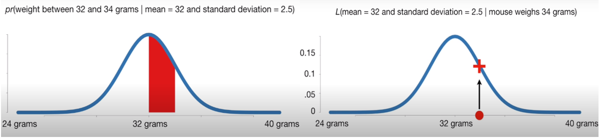
The figure is taken from the StatQuest video In Statistics, Probability is not Likelihood, which explains the difference between probability and likelihood in more detail.
5.2. Semi-parametric models#
5.2.1. Cox Proportional Hazards model#
This section is based on the survey Machine Learning for Survival Analysis: A Survey by Wang, Li and Reddy.
CoxPH is a hybrid of the parametric and non-parametric approaches, in other words, a semi-parametric model, which can obtain a more consistent estimator under a broader range of conditions compared to the parametric models, and a more precise estimator than the non-parametric methods.
Unlike parametric methods, the knowledge of the underlying distribution of time to event of interest is not required, but the attributes are assumed to have an exponential influence on the outcome.
The Basic Cox Model formula for patient i is the following:
The formula consists of the baseline hazard function, \(h_0(t)\) and the partial hazard \(exp(X_i β)\). The baseline hazard is population-level. The baseline hazard changes over time and can be an arbitrary nonnegative function of time, while the partial hazard is a time-invariant scalar factor that only inflates or deflates the hazard. \(X_i = (x_{i1}, x_{i2}, · · · , x_{iP} )\) is the covariate vector for instance i, and \(β^T = (β_1, β_2, · · · , β_P )\) is the coefficient vector.
So, changes in covariates only inflate or deflate the hazard.
\(X_i\) is a covariate vector for time-invariant covariates; however, if there is a need to use Cox with time-varying covariates, one could try an extended Cox model by adding the vector of time-varying covariates multiplied by the vector of their coefficients.
The Cox model is a semi-parametric algorithm since the baseline hazard function, \(h_0(t)\), is unspecified and the outcome distribution is unknown.
The Cox model is a proportional hazards model since the hazard ratio is a constant independent of the baseline hazard function and time because all the subjects share the same baseline hazard function.
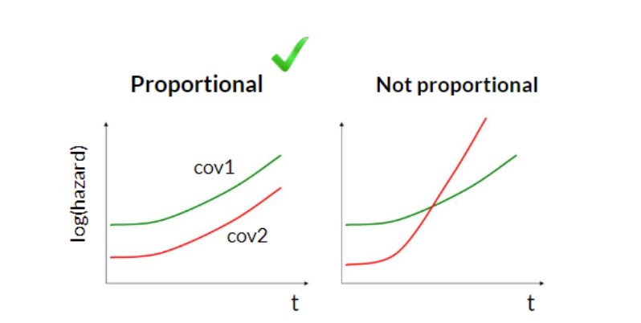
Cox PH is a regression model; however, as the baseline hazard function \(h_0(t)\) is not specified, it is not possible to fit the model using the standard likelihood function. The hazard function \(h_0(t)\) is a nuisance function, while the coefficients β are the parameters of interest in the model. To estimate the coefficients, Cox proposed a partial likelihood which depends only on the parameter of interest β and is free of the nuisance parameters.
The hazard function refers to the probability that an instance with covariate X fails at time t on the condition that it survives until time t, which can be expressed by \(h(t, X)dt\) with \(dt → 0\). Let \(J (J ≤ N)\) be the total number of events of interest that occurred during the observation period for N instances, and \(T_1 < T_2 < · · · < T_J\) be the distinct ordered times to event of interest. Let \(X_j\) be the corresponding covariate vector for the subject who fails at \(T_j\), and \(R_j\) be the set of risk subjects at \(T_j\). Thus, conditional on the fact that the event occurs at \(T_j\), the individual probability corresponding to covariate \(X_j\) can be formulated as follows:
The partial likelihood is the product of the probability of each subject. Referring to the Cox assumption and the presence of the censoring, the partial likelihood is defined as follows:
Here \(j = 1, 2, · · · , N\). Censoring is accounted for by \(δ_j\): if \(δ_j = 1\), the \(j_{th}\) term in the product is the conditional probability; otherwise, when \(δ_j = 0\), the corresponding term is 1, which means that the term will not have any effect on the final product.
The coefficient vector \(β\) is estimated by maximizing this partial likelihood, or equivalently, minimizing the negative log-partial likelihood.
5.2.2. COX PH output#
The interpretation of the Cox model output is explained in detail in the Boston University tutorial Cox Proportional Hazards Regression Analysis (archived copy).
The main outputs of the Cox PH model are estimated \(β\) coefficients in the form of log hazard ratios or hazard ratios. The log hazard ratio represents the increase in the expected log of the relative hazard for each one unit increase in the predictor covariate, holding other covariates constant. The hazard ratios are computed by exponentiating log hazard ratios for more interpretability and can show the increase in the expected hazard in percent.
5.3. Classical machine learning methods#
The main advantage - ability to model the non-linear relationships and work with high dimensional data
5.3.1. Decision tree#
The basic intuition behind the tree models is to recursively partition the data based on a particular splitting criterion, so that the objects that are similar to each other based on the value of interest will be placed in the same node.
We will start with the simplest case - decision tree for classification:
5.3.1.1. Classification decision tree#
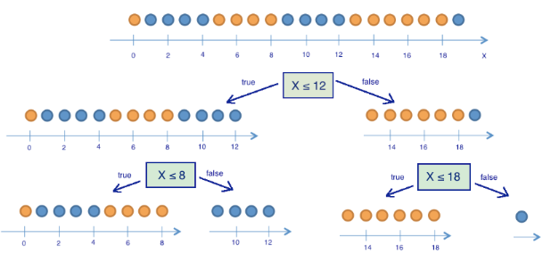
5.3.1.1.1. Probabilities#
Before the first split:
After the first split:
5.3.1.1.2. Entropy:#
Before the first split
After the first split
5.3.1.1.3. Information Gain:#
The best split - the one with the highest information gain!
5.3.1.2. Regression decision tree#
Is a step-wise constant predictor
Let’s look at this example:
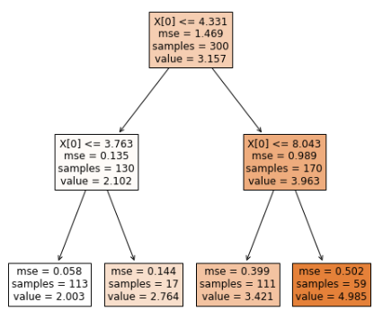
The predictions are step-wise:
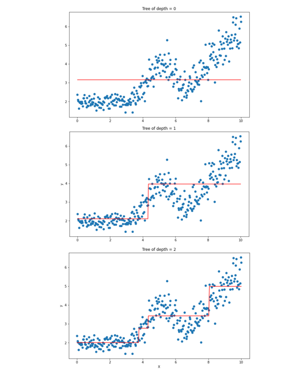
5.3.2. Ensembling#
Ensembling - combining the predictions of multiple base learners to obtain a powerful overall model. The base learners are often very simple models also referred to as weak learners. Multiple diverse models are created to predict an outcome, either by using many different modeling algorithms or using different training data sets.
The main ensembling algorithms:
Bagging - fit many large trees to bootstrap-resampled versions of the training data, and classify by majority vote. (Bootstrapping is a resampling technique with replacement - the same data point may be chosen more than once)
\(C(S)\) is a classifier, based on training data \(S\). We draw bootstrap samples \(S_1, \dots, S_B\) each of size \(N\) with replacement from the training data. Then
Random Forests - fancy version of bagging, tries to improve on bagging by “de-correlating” the trees
Boosting - fit many large or small trees to reweighted versions of the training data. Classify by weighted majority vote.
\({C}_{boost} = \sum_{m=1}^M \alpha_m C_m\).
where M > 0 denotes the number of base learners \(C_m\), and \(α_m\) is a weighting term.
5.3.2.1. Random forest#
Random Forest fits a set of Trees independently and then averages their predictions
The general principles of RF: (a) Trees are grown using bootstrapped data; (b) Random feature selection is used when splitting tree nodes; (c) Trees are generally grown deeply; (d) Forest ensemble is calculated by averaging terminal node statistics
Importantly, the high number of base learners does not lead to overfitting.
5.3.2.2. Gradient boosting#
In contrast to random forest, a gradient boosted model is constructed sequentially in a greedy stagewise fashion
After training a decision tree, the errors of prediction are obtained and the next decision tree is trained on these prediction errors
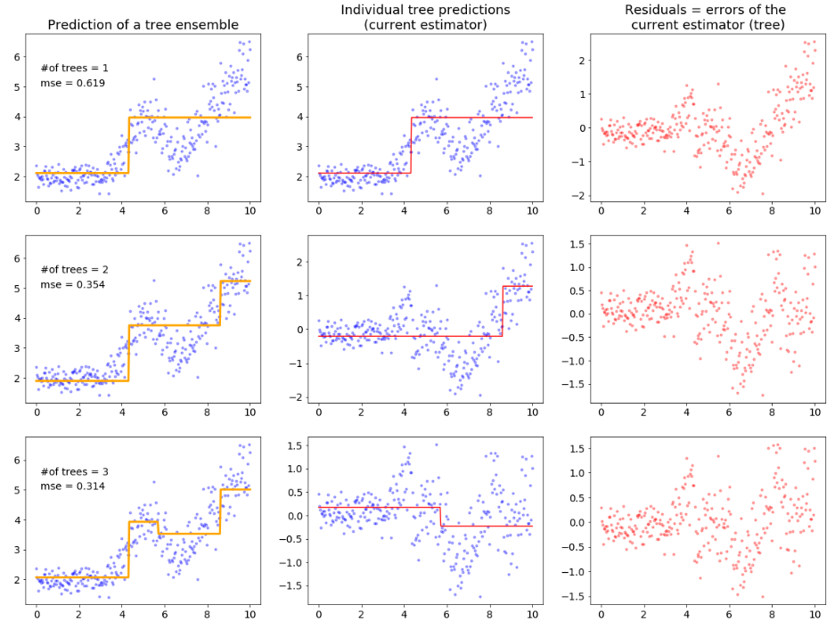
The most important parameter in gradient boosting is the number of base learners to use. A higher number will lead to a more complex model. However, this can easily lead to overfitting on the training data.
If we want to include a high number of base learners, we should use a very low learning rate to restrict the influence of individual base learners - similar to regularization
5.4. Survival machine learning#
Survival analysis is a type of regression problem as we want to predict a continuous value, but with a twist. It differs from traditional regression by the fact that parts of the data can only be partially observed – they are censored
Rather than focusing on predicting a single point in time of an event, the prediction step in survival analysis often focuses on predicting a function: the survival or hazard function. However, for the survival models that do not rely on the proportional hazards assumption, it is impossible to estimate survival or cumulative hazard function. Their predictions are risk scores. If samples are ordered according to their predicted risk score (in ascending order), one obtains the sequence of events, as predicted by the model.
Survival machine learning - machine learning methods adapted to work with survival data and censoring!
5.4.1. Survival random forest#
Survival trees are one form of decision trees which are tailored to handle censored data. The goal is to split the tree node into left and right daughters with dissimilar event history (survival) behavior.
5.4.1.1. Splitting criterion#
The primary difference between a survival tree and the standard decision tree is in the choice of splitting criterion - the log-rank test. The log-rank test has traditionally been used for two-sample testing of survival data, but it can be used for survival splitting as a means for maximizing between-node survival differences.
Let \(X\) denote a specific variable. A proposed split using \(X\) is \(X≤a\) and \(X>a\) which splits the node into left and right daughters:
Let \(t\) be the distinct death times and let \(d_{j,L},d_{j,R}\) and \(Y_{j,L}, Y_{j,R}\) be the number of deaths and number of individuals at risk at time \(t_j\) in daughter nodes \(L, R\). The overall number of deaths and number of individuals at risk at time \(t_j\) can be defined as follows: \(d_j = d_{j,L} + d_{j,R}\) , \(Y_j = Y_{j,L} + Y_{j,R}\).
With these values the logrank test for data split in L and R nodes can be computed as follows:
The obtained value is a measure of node separation. The larger the value, the greater the survival difference between L and R, and the better the split is.
The best split is determined by finding the feature X and split-value a for which the logrank value will be the highest
5.4.1.2. Prediction#
For prediction, a sample is dropped down each tree in the forest until it reaches a terminal node.
Data in each terminal node is used to non-parametrically estimate the cumulative hazard function and survival using the Nelson-Aalen estimator and Kaplan-Meier, respectively.
Where h is a terminal node of the tree, \(t_h\) are the unique death times in h, while \(d_{j,h}\) and \(Y_{j,h}\) are the number of deaths and number of individuals at risk at time \(t_{j,h}\)
All cases within h are assigned the same CHF and survival estimate as the purpose of the survival tree is to partition the data into homogeneous groups (i.e., terminal nodes) of individuals with similar survival behavior. In addition, a mortality risk score can be computed for each terminal node.
The ensemble prediction is simply the average across all trees in the forest.
For more details, see the Random Survival Forests guide of the randomForestSRC R package.
5.4.2. Survival Gradient boosting#
Gradient Boosting does not refer to one particular model, but a framework to optimize loss functions.
5.4.2.1. Cox’s Partial Likelihood Loss#
The default loss function is the partial likelihood loss of Cox’s proportional hazards model. The objective is to maximize the log partial likelihood function, but replacing the traditional linear model with the additive model
5.5. Neural networks - Multi-Layer Perceptron Network#
Here is the model of an artificial neuron - the base element of an artificial neural network. The output is computed using an activation function on the summation of inputs multiplied by weights and the bias value
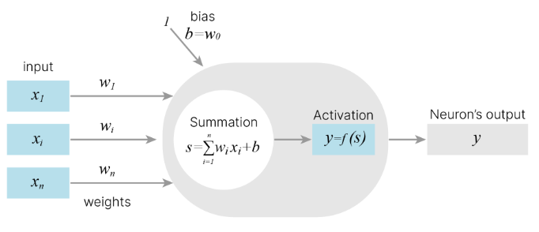
The multilayer perceptron (MLP) - one of the most popular neural network architectures - consists of fully-connected neural layers. Here you can see the example for two hidden layers
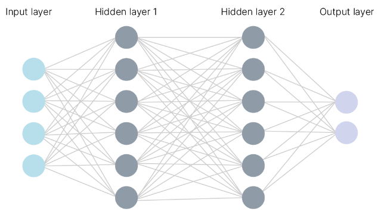
5.5.1. MLP training#
The most popular method for training MLPs is back-propagation. During backpropagation, the output values are compared with the correct answer to compute the value of some predefined error-function. The error is then fed back through the network. Using this information, the algorithm adjusts the weights of each connection in order to reduce the value of the error function by some small amount. After repeating this process for a sufficiently large number of training cycles, the network will usually converge to some state where the error of the calculations is small. In this case, one would say that the network has learned a certain target function.
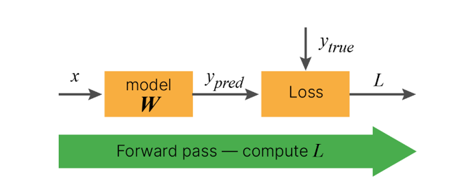
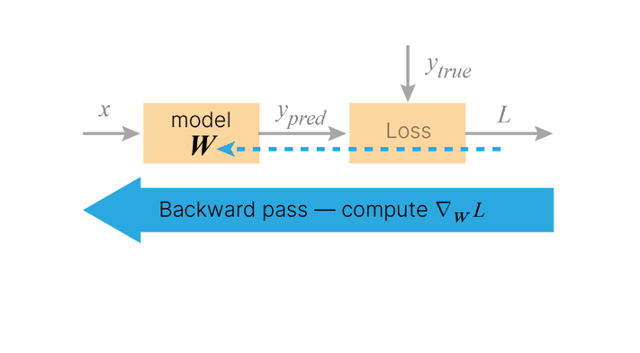
To adjust weights properly, one applies a general method for non-linear optimization that is called gradient descent.
Gradient descent is an iterative optimization algorithm for finding a local minimum of a differentiable function. The idea is to take repeated steps in the opposite direction of the gradient (derivative) of the function at the current point, because this is the direction of steepest descent.
In this picture you can see the process of searching for the local minimum:
So, we need to find the local minimum of the loss function.
We should recall that the loss function is a function of weights: \(Loss(y_{true}, y_{pred}) = Loss(y_{true}, f(X, W)) \), where \(X = (x_{1}, x_{2}, · · · , x_{m} )\) - all inputs, \(W = (w_{1}, w_{2}, · · · , w_{n} )\) - weights of all connections.
We want to adjust weights, so the derivative of the loss function with respect to each weight is computed.
Each derivative \(\frac{dLoss}{dw}\) is calculated using the chain rule as the loss function is a composition of functions.
Here you can see the chain rule for an example composition of functions:
As the derivatives are calculated the weights are changed in the opposite direction of the gradient by some tiny steps - learning rate. Thus the loss function decreases.
Here in the picture below you can see the process of updating weights by little steps (black arrows) in the opposite direction of the gradient to reach the global minimum of the loss function.
These steps correspond to the learning rate
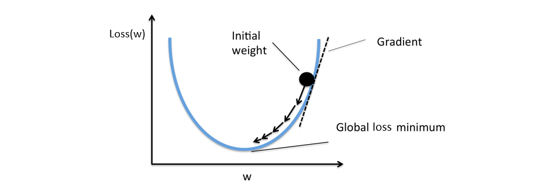
One should choose the learning rate reasonably, as a high learning rate may lead to overshooting the local minimum. In some situations you may use a high learning rate - if you want to search for another local minimum.
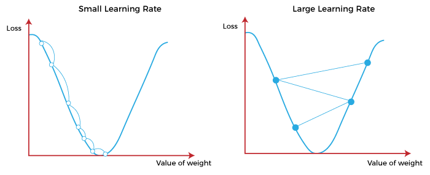
So, we studied back propagation and gradient descent - processes which help the neural network to adjust weights of connections in order to minimize the loss function, which in fact means giving more precise output. In other words, these are the key processes in neural networks training!
Logically, back-propagation can only be applied to networks with differentiable activation functions.
5.6. Survival neural networks#
Neural network methods adapted to work with survival data and censoring! Pycox - python package for survival analysis and time-to-event prediction with PyTorch, built on the torchtuples package for training PyTorch models.
5.6.1. DeepSurv (CoxPH NN)#
Continuous-time model.
Nonlinear Cox proportional hazards network. Deep feed-forward neural network with Cox proportional hazards loss function. Can be considered as a nonlinear extension of the Cox proportional hazards: can deal with both linear and nonlinear effects from covariates.
The network propagates the inputs through a number of hidden layers with weights θ. The hidden layers of the network consist of a fully-connected layer of nodes, followed by a dropout layer. The output of the network is a single node with a linear activation which estimates the log-risk function \(h(X)\) in the Cox model \( h(t,X) = h_0(t)*exp(h(X))\)
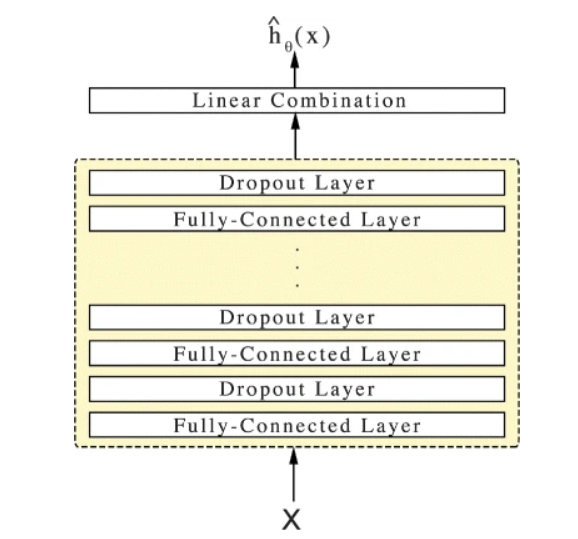
The DeepSurv architecture shown above and its loss function are described in the original paper DeepSurv: personalized treatment recommender system using a Cox proportional hazards deep neural network by Katzman et al. (2018).
5.6.2. Nnet-survival (Logistic hazard NN)#
Discrete-time model, fully parametric survival model
The Logistic-Hazard method parametrizes the discrete hazards and optimizes the survival likelihood. The model is trained with the maximum likelihood method using mini-batch stochastic gradient descent. The model incorporates a time-varying baseline hazard rate and non-proportional hazards
Model likelihood:
5.6.3. Performance metrics#
Our test data is usually subject to censoring too; therefore, common metrics like root mean squared error or correlation are unsuitable. Instead, we use specific metrics for survival analysis:
Harrell’s concordance index. Predictions are often evaluated by a measure of rank correlation between predicted risk scores and observed time points in the test data. Harrell’s concordance index or c-index computes the ratio of correctly ordered (concordant) pairs to comparable pairs. The higher the C-index is - the better model performance is.
Time-dependent ROC AUC. Extension of the well-known receiver operating characteristic curve (ROC curve) to possibly censored survival times. Given a time point, we can estimate how well a predictive model can distinguish subjects who will experience an event by time \(t\) (sensitivity) from those who will not (specificity). The higher the ROC AUC is - the better model performance is.
Time-dependent Brier score. The time-dependent Brier score is an extension of the mean squared error to right censored data. The lower the Brier score is - the better model performance is.
5.6.4. Feature selection#
Which variable is most predictive?
Different methodologies exist; however, we will only talk about one simple but valuable method - permutation importance
5.6.4.1. Permutation feature importance#
Permutation feature importance is a model inspection technique which can be used for any fitted estimator with tabular data. This is especially useful for non-linear estimators.
The permutation feature importance is a decrease in a model score when a single feature value is randomly shuffled. This procedure breaks the relationship between the feature and the target, thus the drop in the model score is indicative of how much the model depends on the feature.
5.7. Credits#
This notebook was prepared by Margarita Sidorova